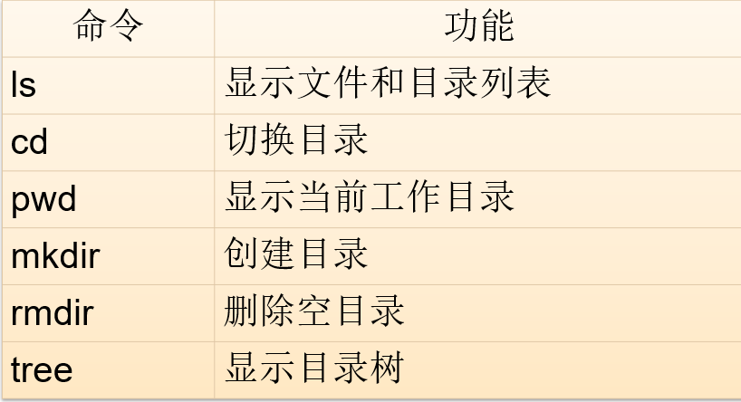

Linux自学习题答案
第二章
-
什么是Shell？它具有什么功能？Linux默认使用什么Shell？
- Shell是系统的用户界面，提供了用户与内核进行交互操作的一种接口(命令解释器) 。
- 它接收用户输入的命令并把它送入内核去执行。起着协调用户与系统的一致性和在用户与系统之间进行交互的作用。
- shell重要功能：
- 命令行解释
- 命令的多种执行顺序
- 通配符（ wild-card characters ）
- 命令补全、别名机制、命令历史
- I/O重定向（ Input/output redirection ）
- 管道（ pipes ）
- 命令替换（
或$( ) ） - Shell编程语言（ Shell Script ）
- bash是大多数Linux系统的默认Shell。
-
简述文件的类型。硬链接和软链接有何区别？
- 文件类型：
- 普通文件 ( - )
- 目录 ( d )
- 符号链接 ( l )
- 字符设备文件 ( c )
- 块设备文件 ( b )
- 套接字 ( s )
- 命名管道 ( p )
- 硬链接和软连接的区别：
- 硬链接，链接文件和被链接文件必须位于同一个文件系统内，不能建立指向目录的硬链接
- 软链接，链接文件和被链接文件可以位于不同文件系统，可以建立指向目录的软链接
- 文件类型：
-
在Linux下如何使用设备？常用的设备名有哪些？
- 设备的使用方法
- 用户可以用设备名来使用设备
- 用户可以用访问文件的方法来使用设备
- 常用的设备名称：
- /dev/hda 主IDE的主接口上的硬盘，即系统第一个硬盘
- /dev/hda1 第一个硬盘的第一个主分区
- /dev/hda2 第一个硬盘的第二个主分区
- /dev/hda3 第一个硬盘的第三个主分区
- /dev/hda4 第一个硬盘的第四个分区，即扩展分区
- /dev/hda5 第一个硬盘的第一个逻辑分区
- /dev/null －空设备
- /dev/zero －零设备
- 设备的使用方法
-
简述Linux的标准目录结构及其存放内容？
- Linux 文件系统是一个目录树的结构，文件系统结构从一个根目录开始，根目录下可以有任意多个文件和子目录，子目录中又可以有任意多个文件和子目录。
- 存放内容
- Linux 文件系统是一个目录树的结构，文件系统结构从一个根目录开始，根目录下可以有任意多个文件和子目录，子目录中又可以有任意多个文件和子目录。
-
Linux的基本命令格式如何？Linux下经常使用的通配符有哪些？
- 一般格式：
- cmd [options] [arguments]
- 说明：
- Linux区分大小写
- 最简单的Shell命令只有命令名，复杂的Shell命令可以有多个选项和参数。
- 选项和参数都作为Shell命令执行时的输入，它们之间用空格分隔开。
- 单字符参数前使用一个减号（-）
- 单词参数前使用两个减号（--）。
- 多个单字符参数前可以只使用一个减号。
- 操作对象（arguments）可以是文件也可以是目录，有些命令必须使用多个操作对象， 如cp命令必须指定源操作对象和目标操作对象。
- 并非所有命令的格式都遵从以上规则，例如dd、find等
- 通配符：
- *：匹配任何字符和任何数目的字符
- ?：匹配单一数目的任何字符
- [ ]：匹配[ ]之内的任意一个字符
- [! ]：匹配除了[! ]之外的任意一个字符，!表示非的意思
- 一般格式：
-
如何获得命令帮助？help命令和--help命令选项的作用分别是什么？
- 字符界面
- 使用help获得bash的内部命令帮助
- 使用man命令获得手册页帮助
- 使用info命令获得texinfo文档帮助
- 使用pinfo命令获得texinfo文档帮助
-
GNOME桌面环境下
- 使用yelp浏览帮助文档
- Wh*命令：
$ whatis ls $ whereis ls $ which ls- Man命令：
$ man passwd $ man 5 passwd $ man -k selinux -
help 命令能够在控制台上打印出我们需要的命令的帮助信息，使用方式为：help
--help用 help 来查询外部命令的帮助文档
- 字符界面
-
常用的文件和目录操作命令有哪些？各自的功能是什么？
- 常见的目录操作命令
 - 常见的文件操作命令
- 常见的目录操作命令
- 常用的信息显示命令有哪些？各自的功能是什么？
- 格式：
- ls [选项] [目录或是文件]
- ls [选项] [目录或是文件]
- 常见的系统信息显示命令
- 常用的资源显示命令
- 常用的用户相关信息显示命令
- 常用的网络信息显示命令
- 格式：
-
打包和压缩有何不同？常用的打包和压缩命令有哪些？
- 打包是指将一大堆文件或目录什么的变成一个总的文件，不会压缩文件大小。
- 压缩则是将一个大的文件通过一些压缩算法变成一个小文件。
- 常用的打包和压缩命令
-
简述在Shell中可以使用哪几种方法提高工作效率。
- 命令补全
- 通常用户在 bash 下输入命令时不必把命令输全， shell 就能判断出你所要输入的命令。用来执行这项功能的键是 Tab 键，按下一次 Tab 键后，bash 就试图完成整个命令的输入。
-
命令历史
- bash可以记录一定数目的以前在Shell中输入的命令。
- 最简单的方法是用上下方向键、
和 键来查看历史命令 - 用 !! 执行最近执行过的命令
- 用 ! <命令事件号> 执行已经运行过的命令
- 用 ! <已经使用过的命令前面的部分> 执行已经运行过的以该字符串开头的最近的命令
-
命令别名
- 允许用户按照自己喜欢的方式对命令进行自定义
- 格式
- alias [alias_name='original_command']
- alias_name是用户给命令取的别名。
- original_command是原来的命令和参数。若命令中包含空格或其他的特殊字符串必须使用引号。
- 在定义别名时，等号两边不允许有空格。
- 不带任何参数的alias命令显示当前已定义的所有别名。
- 可以使用 unalias alias_name 命令取消某个别名的定义。
- 如果用户需要别名的定义在每次登录时均有效，应该将其写入用户自家目录下的.bashrc文件中。
- 命令补全
-
Linux下的隐含文件如何标识？如何显示？
- 以“.”开头的文件或目录是隐含的
- ls -a 列表显示当前目录下的文件和目录（包括隐含文件和目录）
-
Linux下经常使用-f和-r参数，它们的含义是什么？
-
-f表示强制的意思
- cp -f强制复制，不管目标是否存在
- ln -f : 强行创建链接，不论其是否存在
- rm -f 强制删除文件。
- tar -f 指定打包文件名。
- iconv -f 指定原始文本编码。
-
-r表示目录的意思
- touch -r <参考文件或目录> : 使用指定文件的时间属性而非当前时间。
- cp -r 递归地复制目录及目录内的所有项目
- rm -r 递归所有的子目录。
- grep -r 对目录（子目录）的所有文件递归地进行
-
-
Vi的3种运行模式是什么？如何切换？
- 3种运行模式
- 普通(normal)模式
- 插入(insert)模式
- 命令行(Cmdline)模式
- 切换：
- 3种运行模式
-
什么是重定向？什么是管道？什么是命令替换？
- 所谓重定向，就是不使用系统的标准输入端口、标准输出端口或标准错误端口，而进行重新的指定，所以重定向分为输出重定向、输入重定向和错误重定向。通常情况下重定向到一个文件。
- 能够将简单的命令连接起来就是管道。
- 命令替换主要是指将命令的标准输出值赋值给某个变量。使用命令的输出，常用于在文本中嵌入命令的执行结果，命令参数是另一个命令执行的结果
-
Shell变量有哪几种？如何定义和引用Shell变量？
- shell变量有三种：
- 内部变量：由系统提供，用户只能使用不能修改。
- 用户变量：由用户建立和修改，在 shell 脚本编写中会经常用到。
- 环境变量：这些变量决定了用户工作的环境，它们不需要用户去定义，可以直接在 shell 中使用，其中某些变量用户可以修改。
-
自定义变量
- 变量赋值（定义变量）
varName=Value export varName=Value -
引用变量
$varName- 引用可以通过下面三种方式实现
- 使用转义字符：\
- 使用单引号：‘ ’
- 使用双引号：“ ”
- 转义字符的引用方法就是直接在字符前加反斜杠。例：\$，\‘，\“，\，\ ，!
- 强引用
- 单引号对是强引用
- 单引号对中的字符都将作为普通字符，但不允许出现另外的单引号。
- 弱引用
- 双引号对是弱引用
- 双引号对中的部分字符仍保留特殊含义
- $（美元符号）－ 变量扩展
- `（反引号） － 命令替换
- \（反斜线） － 禁止单个字符扩展
- !（叹号） － 历史命令替换
- shell变量有三种：
-
登录Shell和非登录Shell的启动过程？
- Login shell
/etc/profile /etc/profile.d/*.sh $HOME/.bash_profile $HOME/.bashrc /etc/bashrc - Non-Login shell
$HOME/.bashrc /etc/bashrc
- Login shell
-
如何设置用户自己的工作环境？
- 对所有用户进行设置
/etc/profile /etc/bashrc - 只对当前用户进行设置
~/.bash_profile ~/.bashrc
- 对所有用户进行设置
Last update: 2021-01-26